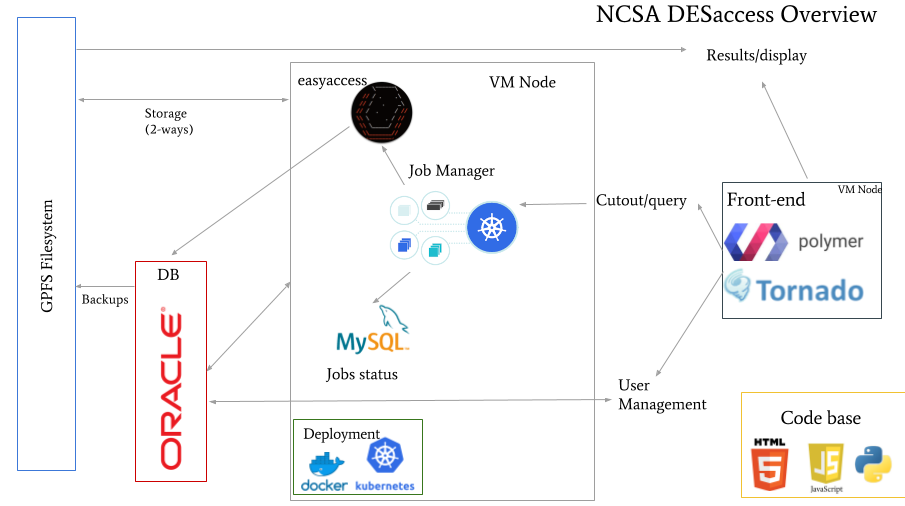
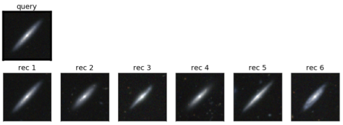
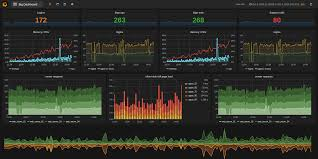
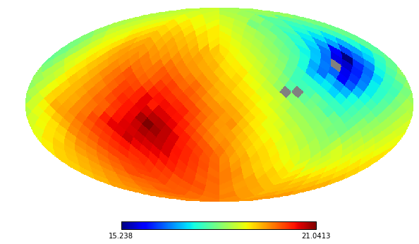
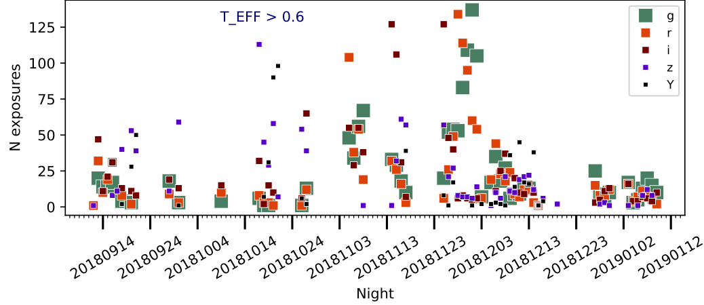
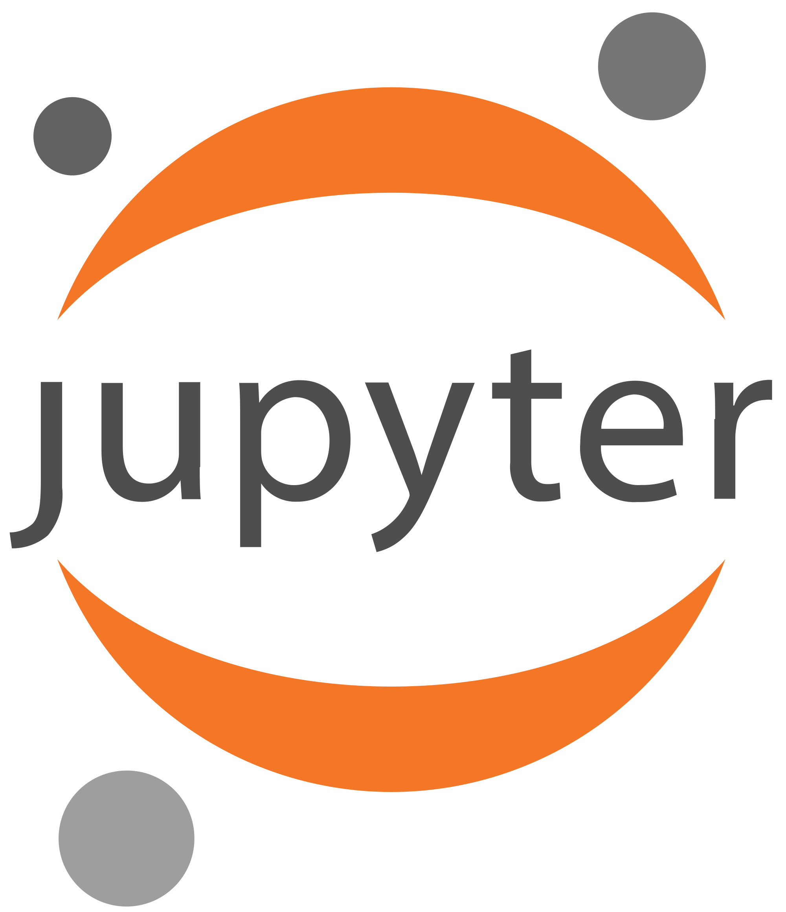

DES Labs
DES Labs
Overview
We work on a variety of projects, some of which are described on this page. Our flagship product and the most complex project is our DESaccess service, featured at the top. Most of our projects are open source and thus available to the general public and to anyone who wishes to help us develop these tools and services for the advancement of science. Use the Current Projects menu to jump to a project and learn more.
DESaccess development
This project focuses on DESaccess, an open source set of tools to access and analyze astronomical data, used as a primary research tool by hundreds of astronomer around the globe. It provides means to query the Oracle DB hosting the DES data and generate cutouts from astronomical images. This project has three main components: Front-end, back-end and deployment. We continue to develop and improve these components, as we add new features and improve the overall system architecture. For a longer description of these tools please explore the DES public data release site.
The code powering DESaccess as well as the DES release site are open source. The DESaccess website is built HTML, JS and LitElement from the Polymer Project that provides a reusable web component framework. The DESaccess API server and job management system are written in Python and use packages including the Tornado web framework and the Kubernetes Python API. All of these applications are containerized using Docker and run within a Kubernetes cluster, providing a robust system enabling high-availability services with scalable deployments and efficient resource usage.

Requirements:
Can be seen in the Figure with the schematic drawing
Difficulty:
It depends on the features to be added, but medium is a good classification
Mini-projects:
- Live monitoring system
- Interactive footprint
- Automatic deployment
- Better control of timeout jobs
- public API
Links:
Galaxy images recommendation system
This project will create a recommendation system when visualizing galaxy images and make recommendations to the user on similar galaxies. The main idea is to run a Convolutional Neural Network (CNN) and/or autoencoders to rank galaxies from a large DB by their similarities to a query image. There is already work done for this projects and mentor will provide all the necessary images and tools to be used. Ideally this will end up in a web application itself or as a addition to
DESaccess.

Requirements for back-end:
Python, Tensorflow, Scikit-learn, image manipulation, Machine learning
Requirements for front-end:
Polymer, HTML, Javascript, Python, Tornado
Difficulty:
medium
Monitoring services with InfluxDB and Grafana
This project implements a logging system and a monitoring page for all the services provided by DES Labs, it uses InfluxDB and Grafana as main components and it will deployed using Docker Container and Kubernetes. We will use also to monitor not just the services status but other internal aspects of these services.

Requirements:
Python, InfluxDB, Grapahana, Docker, Kubernetes, Prometheus (as alternative)
Difficulty:
easy
Somsphere
This project will convert current Self-Organizing-Map in Spherical Coordinates written in Python to a C++ implementation for efficiency. The application of Self-Organized-Maps, a class of unsupervised machine learning algorithm are vast. From clustering to accurate prediction and labeling. This is a on-going project with multiple applications to real scientific problems.

Continuous integration and deployment (CI/CD)
Modern day DevOps practices involve continuous development, continuous testing, continuous integration, continuous deployment and continuous monitoring of software applications throughout their development life cycle. Our approach to implementing these concepts is itself continuously evolving as we optimize our own workflows and techniques.
Data Vista
This project aims to provide an easy-to-use online plotting tool, for the tabular data retrieved from the DES database. The main usability will be to quickly assess the results of the retrieved queries by selecting between 2 to 4 columns to plot (the third and fourth columns will represent color and marker size). For refined visualizations we have more elaborated tools as Jupyter notebooks, then this feature needs to be robust, fast, simple, and clean.

Requirements:
Python, Bokeh, Holoviews, Polymer
Difficulty:
easy
Repository:
easyaccess plugin features
This project will add a plugin capabilities to easyaccess, a enhanced command line client to access data from astronomical surveys, currently used by hundreds of scientists, we have plans to make the client compatible with DES public access. It is entirely written in python, it is python2/3 compatible and it has a long number of nice and customized features, like tab-completion, find for user/tables download and upload tables with a large range of data file format. The idea for this project is to add a functionality os other scientists can add plugins and features.
Jupyter Lab wrapper for images
This projects is to finish the implementation of a Jupyter Notebook wrapper for a visualization tool called
JS9 to visualize astronomical images and catalogs on the web. This wrapper is extremely useful and a long wanted feature to out Jupyter Hub implementation. We have a initial repository and it mainly requires Javascript and Python.
